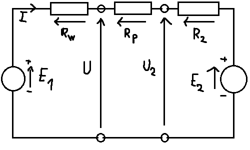

Podstawy Elektroniki - Wykład 6
Przykład - ładowanie akumulatora
Akumulator samochodowy o napięciu \(E_a = 12,7 \ V\) i rezystancji wewnętrznej \(R_a = 0,004 \Omega\) ładowany jest
za pomocą prostownika o napięciu \(E = 13 \ V\) o rezystancji wewnętrznej \(R_W = 0,04 \ \Omega\).
Rezystancja przewodów \(R_{p1} = R_{p2} = 0,003 \ \Omega\).
Przeprowadzić bilans mocy. Naszkicować diagram mocy.
Ładowanie akumulatora = bilans

\[R_p = R_{p1} + R_{p2} = 0,003 + 0,003 = 0,006 \Omega\] \[I=\frac{E-E_2}{R_w + R_p + R_2} = \frac{13-12,7}{0,04 +
0,006 + 0,004} = \frac{0,3}{0,05} = 6 A\] \[P_{zr} = EI - E_2I = 13*6 - 12,7 * 6 = 78 - 72,6 = \underline{1,8 \ W}\]
\[P_{odb} = R_Wi^2 + R_PI^2 + R_2I^2 = 0,04 * 6^2 + 0,006 * 6^2 + 0,004 * 6^2 = \underline{1,8 \ W}\]
\[\underline{P_{zr} = P_{odb}}\]
Zasada zachowania energii
Jak w każdym układzie fizycznym, tak i w obwodzie elektrycznym obowiązuje zasada zachowanie energii.
Zwykle formułuje sie ją dla energii w jednostce czasu, czyli dla mocy:
Suma mocy dostarczanych do obwodu przez źródła napięcia i prądu równa się sumie mocy wydzielanych na rezystorach.
\[P_{zr} = P_{odp}\]
\[P_{zr} = \sum(EI, UJ) \ \ \ P_{odb} = \sum(IR^2)\]
Moc źródła prądu
Moc źródła \(J\), na którego zaciskach panuje napięcie \(U\), równa się \[P=UJ \ \ \ \text{lub} \ \ \
P=-UJ\] zależnie od tego, czy strzałka napięcia ma zwrot zgodny ze strzałką pradu źródłowego (+), czy
przeciwny (-).
Tak zdefiniowaną wartość interpretujemy zawsze jako moc elektryczną
oddawaną przez źródło do obwodu, przy czym może być ona dodatnia lub ujemna; w tym drugim
przypadku źródło pobiera z obwodu moc \(-P\), a pobraną energię \(P_t\) magazynuje.
Moc źródła napięcia
Moc źródła napięcia \(E\), przez które przepływa prąd \(I\), równa się \[P=EI \ \ \ \text{lub} \ \ \ P=-EI\]
zależnie od tego, czy strzałka prądu ma zwrot zgodny ze strzałką napięcia źródłowego (+), czy przeciwny (-).
Tak zdefiniowaną wartość interpretujemy zawsze jako moc elektryczną
oddawaną przez źródło do obwodu, przy czym może być ona dodatnia lub ujemna; w tym drugim
przypadku źródło pobiera z obwodu moc \(-P\), a pobraną energię \(P_t\) magazynuje.
Moc wydzielana na rezystancji
Przypomnienie: moc oddawana na odcinku, przez który płynie prąd \(I\) i pomiędzy
końcami którego panuje napięcie \(U\), wynosi: \[P+UI\]
Za pomocą prama Ohma (\(U = RI, I = \frac{U}{R}\)) możemy ten wzór przekształcić do \[P=RI^2 =
\frac{U^2}{R}\]
Moc ta jest zawsze nieujemna, wskazując, że rezystor pobiera energię elektryczną z obwodu i rozprasza ją w innej
formie (typowo w postaci ciepła).
Prawo koła napięć
Bezpośrednio z II prawa Kirchhoffa wyika twz. prawo koła napięć:
Suma algebraiczna wszystkich napięć w dowolnym konturze zamkniętym (kole) jest równa zeru \[\sum(U, E) = 0\]
Prawo to służy do wyznaczanie napięcia między dwoma dowolnymi punktami obwodu elektrycznego.
\[U_{AC} - U_5 + U_4 = 0 \Rightarrow U_{AC} = U_5 - U_4\] \[U_{AC} - U_6 + E_6 \Rightarrow U_{AC} = U_6 - E_6\]
\[U_{AC} + U_2 - E_1 + U_1 = 0 \Rightarrow U_{AC} = E_1 - U_1 - U_2\]
Przykład
Jaki prąd płynie przez rezystor \(R_3 = 3 \Omega\), jeżeli \(R_1 = 2 \Omega\), \(R_2 = 6 \Omega\), \(E =
12V\)?
\[R_{23} = R_2 || R_3 = \frac{R_2R_3}{R_2 + R_3} = \frac{6*3}{6+3} = 2 \Omega\] \[I_1 = \frac{E}{R_1 +
R_{23}} = \frac{12}{2+2} = 3A\] \[I_3 = \frac{R_2}{R_2 + R_3}I_1 = \frac{6}{3+6}*3 = 2A\]
Zamiana trójkąt-gwiazda
Rozwiązując powyższy układ równań ze względu na \(r_1, \ r_2 \ \text{i} \ r_3\), dostajemy wzory na zamianę
\(\bigtriangleup - Y\)
\[r_1 = \frac{R_2 R_3}{R_1 + R_2 + R_3}\] \[r_2 = \frac{R_3 R_1}{R_1 + R_2 + R_3}\] \[r_3 = \frac{R_1
R_2}{R_1 + R_2 + R_3}\]
Jeżeli \(R_1 = R_2 = R_2 = R_k\), to \(r_1=r_2=r_3=\frac{R_k}{3}\)
Połączenie w gwiazdę i trójkąt
Równoważność obydwu połączeń wymaga, aby ich rezystancja zastępcza względem każdej pary zacisków \(AB\),
\(BC\) i \(CA\) była jednakowa.
Stąd mamy układ równań: \[R_{AB} = \frac{R_1*(R_2 + R_3)}{R_1 + R_2 + R_3} = r_2 + r_3\] \[R_{BC} =
\frac{R_2*(R_3 + R_1)}{R_1 + R_2 + R_3} = r_3 + r_1\] \[R_{CA} = \frac{R_3*(R_1 + R_2)}{R_1 + R_2 + R_3} =
r_1 + r_2\]
Trójką i gwiazda - przykłady
Dzielnik prądu
Dwa rezystory połączone równolegle stanowią tzw. dzielnik prądu.
Z zalezności podanych obok wynika, że:
Prądy płynące przez rezystory połączone równolegle rozpływają się odrwotnie proporcjonalnie do wartość ich
rezystacji \[\frac{I_1}{I_2} = \frac{G_1}{G_2} = \frac{R_2}{R_1}\]
Prądy płynące przez rezystory połączone równolegle mają się tak do prądu całkowitego jak ich konduktancje do
dkonduktancji zastępczej \[I_1 = \frac{G_1}{G_1+G_2}I = \frac{R_2}{R_1 + R_2}I, \ \ \ I_2 =
\frac{G_2}{G_1+G_2}I = \frac{R_1}{R_1 + R_2}I\]

\[I_1 = \frac{U}{R_1} = G_1U\] \[I_2 = \frac{U}{R_2} = G_2U\] \[I = I_1 + I_2 = (G_1 + G_2)U\]
Dzielnik napięcia
Dwa rezystory połączone szeregowo stanowią tzw. dzielnik napięcia.
Z zalezności podanych obok wynika, że:
Napięcie na rezystorach połączonych szeregowo rozkładają się proporcjonalnie do wartość ich rezystacji
\[\frac{U_1}{U_2} = \frac{R_1}{R_2}\]
Napięcia na rezystorach połączonych szeregowo mają się do napięcia zasilania tak jak ich rezystancje do
rezystancji zastępczej \[U_1 = \frac{R_1}{R_1+R_2}U, \ \ \ U_2 = \frac{R_2}{R_1+R_2}U\]
\[U_1 = R_1I\] \[I_2 = R_2I\] \[U = U_1 + U_2 = (R_1 + R_2)I\]
II prawo Kirchhoffa
Elementy RLC - podsumowanie

Impedancja zespolona dla prądów sinusoidalnych
Impedancja
\[Z = R + jX = |Z|e^{j\phi}\] \(R\) - rezystancja (oporność czynna)
\(X\) - reaktancja (oporność bierna) \[|Z| = \sqrt{R^2 + X^2}\] \[\phi = \arctan(\frac{X}{R})\]
Admitancja
\[X = \frac{1}{Z} = G + jB\] \(G\) - konduktancja
\(B\) - susceptancja
\[0 \leqslant R \leq \infty\] \[-\infty \leq X \leq \infty\] \[-\frac{\pi}{2} \leqslant \phi \leqslant
\frac{\pi}{2}\]